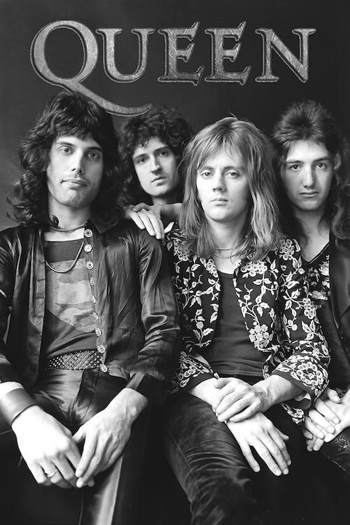

Queen are a British rock band formed in London in 1970. Their classic line-up was Freddie Mercury (lead vocals, piano), Brian May (guitar, vocals), Roger Taylor (drums, vocals) and John Deacon (bass). Their earliest works were influenced by progressive rock, hard rock and heavy metal, but the band gradually ventured into more conventional and radio-friendly works by incorporating further styles, such as arena rock and pop rock. Before forming Queen, May and Taylor had played together in the band Smile. Mercury was a fan of Smile and encouraged them to experiment with more elaborate stage and recording techniques. He joined in 1970 and suggested the name "Queen". Deacon was recruited in February 1971, before the band released their eponymous debut album in 1973. Queen first charted in the UK with their second album, Queen II, in 1974. Sheer Heart Attack later that year and A Night at the Opera in 1975 brought them international success. The latter featured "Bohemian Rhapsody", which stayed at number one in the UK for nine weeks and helped popularise the music video format.
The band's 1977 album News of the World contained "We Will Rock You" and "We Are the Champions", which have become anthems at sporting events. By the early 1980s, Queen were one of the biggest stadium rock bands in the world. "Another One Bites the Dust" from The Game (1980) became their best-selling single, while their 1981 compilation album Greatest Hits is the best-selling album in the UK and is certified nine times platinum in the US. Their performance at the 1985 Live Aid concert is ranked among the greatest in rock history by various publications. In August 1986, Mercury gave his last performance with Queen at Knebworth, England. In 1991, he died of bronchopneumonia—a complication of AIDS—and Deacon retired in 1997. Since 2004, May and Taylor have toured under the "Queen +" name with vocalists Paul Rodgers and Adam Lambert. Estimates of Queen's record sales range from 170 million to 300 million records, making them one of the world's best-selling music artists. In 1990, Queen received the Brit Award for Outstanding Contribution to British Music from the British Phonographic Industry. They were inducted into the Rock and Roll Hall of Fame in 2001. Each member has composed hit singles, and all four were inducted into the Songwriters Hall of Fame in 2003. In 2005, Queen received the Ivor Novello Award for Outstanding Song Collection from the British Academy of Songwriters, Composers, and Authors. In 2018, they were presented the Grammy Lifetime Achievement Award.
The founder members of Queen met in West London during the late 1960s. Guitarist Brian May had built his own guitar with his father in 1963, and formed the group 1984 the following year with singer Tim Staffell. May left the group in early 1968 to focus on his degree in Physics and Infrared Astronomy at Imperial College and find a group that could write original material. He formed the group Smile with Staffell (now playing bass) and with keyboardist Chris Smith. To complete the line-up, May placed an advertisement on a college notice board for a "Mitch Mitchell/Ginger Baker type" drummer; Roger Taylor, a young dental student, auditioned and got the job. Smith left the group in early 1969, immediately before a gig at the Royal Albert Hall with Free and the Bonzo Dog Doo-Dah Band.